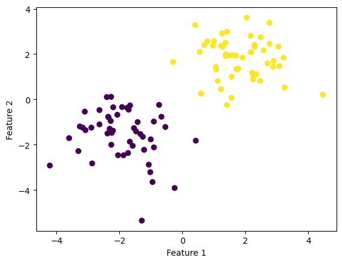
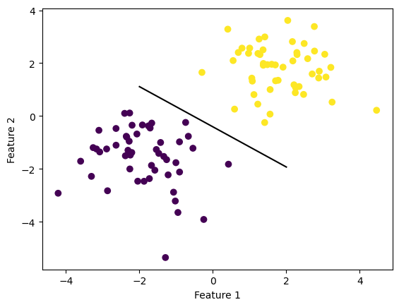
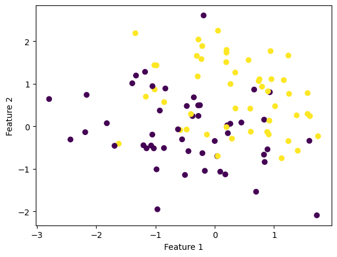
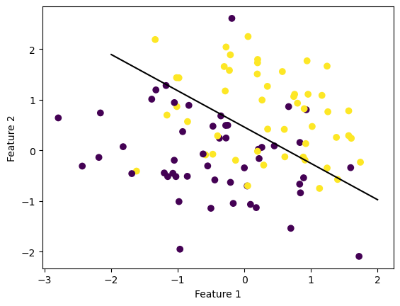

Finn’s implementation of the perceptron algorithm.
Author
Finn Ellingwood
Published
March 14, 2023
My Implementation of the Perceptron Algorithm
In this blog post, I attempted to implement the perceptron algorithm using numerical programming and demonstrate its use on synthetic data sets.
In class, we learned that there is a we can have a data set described by:
A matrix \(X \in R^{n\times p}\) of predictor variables. There are n observations with p features.
A vector \(y \in \{0,1\}^{n}\) of binary labels.
Given these, we are also assuming that out data are linearly (or almost linearly) seperated. Considering this, there also exists a vector \(w \in p\) and a scalar \(b\) for every \(i\),
Given the the below code from blog post instructions, there will be \(p = 2\) features.
import numpy as npimport pandas as pdimport seaborn as snsfrom matplotlib import pyplot as pltfrom sklearn.datasets import make_blobsnp.random.seed(7654)n =100p_features =3X, y = make_blobs(n_samples =100, n_features = p_features -1, centers = [(-1.7, -1.7), (1.7, 1.7)])fig = plt.scatter(X[:,0], X[:,1], c = y)xlab = plt.xlabel("Feature 1")ylab = plt.ylabel("Feature 2")

Between the above two clouds, you can imagine drawing a line which divides both colors perfectly. With a ruler and a pencil this might appear to be easy to do.
Warning: Don’t draw on you screen. It might ruin it
Instead, I have implemented a python algorithm perceptron.py to do it for us!
And below we can see our amazing line which seperates the two blobs perfectly. In this case we acheived perfect seperation!
def draw_line(w, x_min, x_max): x = np.linspace(x_min, x_max, 101) y =-(w[0]*x + w[2])/w[1] plt.plot(x, y, color ="black")fig = plt.scatter(X[:,0], X[:,1], c = y)fig = draw_line(p.w, -2, 2)xlab = plt.xlabel("Feature 1")ylab = plt.ylabel("Feature 2")

We can prove our perfectness of seperation with the score method:
p.score(X, y)
1.0
This score should be the same as the final history value.
More experimentation!
Let’s create some non-linearly seperable synthetic data sets, just so we can prove my algorithm can frind the next closest line of seperability.
import numpy as npimport pandas as pdimport seaborn as snsfrom matplotlib import pyplot as pltfrom sklearn.datasets import make_blobsnp.random.seed(54321)n =100p_features =3X, y = make_blobs(n_samples =100, n_features = p_features -1, centers = [(-0.5, -0.5), (0.5, 0.5)])fig = plt.scatter(X[:,0], X[:,1], c = y)xlab = plt.xlabel("Feature 1")ylab = plt.ylabel("Feature 2")

In the above plot of clouds, the dots very clearly overlap, and finding a line to divide them completely won’t be possible. Instead, we can have the algorithm keep trying it’s best until the max_steps is reached:
p = perceptron.Perceptron()p.fit(X, y, max_steps =10000)
I set the max_steps here to be a bit higher so the algorithm can have more time to do its best. Here is the same p instance of the class Perceptron, with the same instance variable w of weights:
p.w
array([ 1.14190182, 1.59493071, -0.73332539])
And putting everything together, we get a line that tries to seperate both dot blobs:
def draw_line(w, x_min, x_max): x = np.linspace(x_min, x_max, 101) y =-(w[0]*x + w[2])/w[1] plt.plot(x, y, color ="black")fig = plt.scatter(X[:,0], X[:,1], c = y)fig = draw_line(p.w, -2, 2)xlab = plt.xlabel("Feature 1")ylab = plt.ylabel("Feature 2")

We can do the same chack of the score:
p.score(X, y)
0.62
So it looks like the score did not get to \(1\), and in the above graph you can see that there are a few yellow dots on the purple side and vice versa. Because of the random nature of how the vector w is initialized, some instances of running the algorithm will be better and some not so much.
Again we can also visualize the progress the algorithm made with the history graph:
So actually, it looks like the accuracy at times reached \(0.6\), depending on the final iteration and randomness from the index i within the number of observations, we can get a worse score.